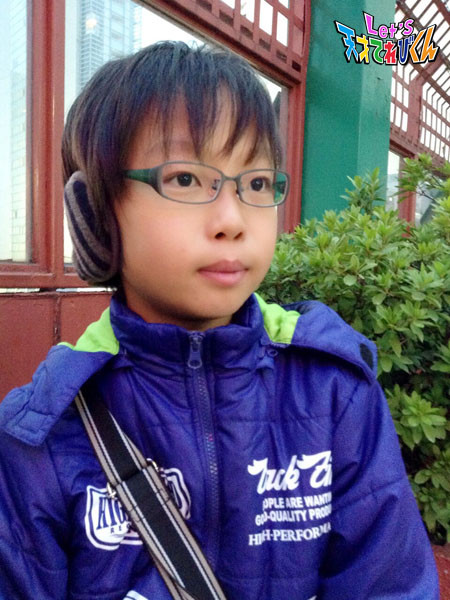
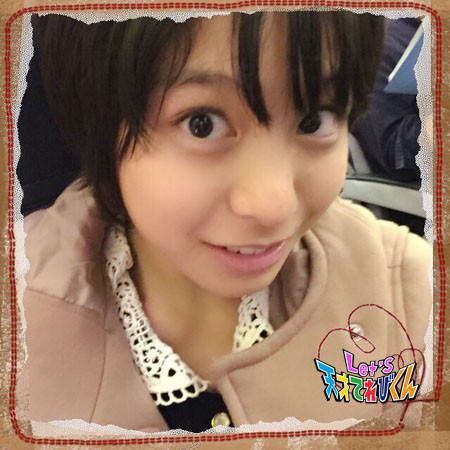
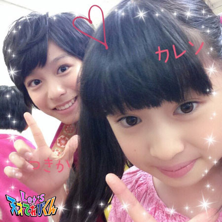
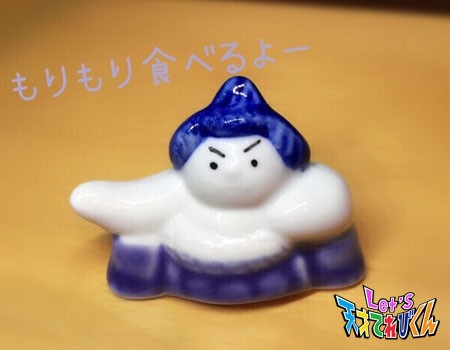
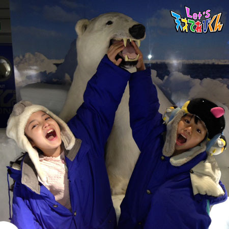

思わず大笑いしてしまったこと［林武尊］
こんにちは、武尊です。
ずいぶんと寒くなりましたね。
みんな、風邪を引かないように気をつけてね（＾◇＾）
ぼくは、3歳までバリ島で生活をしていました。
そのせいか、すごーく寒がりです…
小さいときにあたたかいところにいると、
毛穴が広がって、寒く感じるって聞いたけど、ほんとかなー？？
そして、今年も早速、耳あてを買いました。
あったかくて気持ちいい～

今回のお題 『 思わず大笑いしてしまったこと 』
それは、お母さんのハプニングです。
とある理由で、お母さんのくつ底がぺらんぺらんになりました。
ずいぶんと歩きにくそうだったけど、
ぼくは用事があったので、
そのまま、お母さんと別れました。
あとで話を聞いたら、
別れたあとに、すぐコンビニで瞬間接着剤を買って、
しっかりと裏をくっつけたそうです。
はなれないように、つま先立ちでギュッと押したら、
くつにソックスがくっつき、ソックスに足がくっついちゃったんです！
それをぼくが聞いたとき、大笑いしながら
「 はずれたの？」
と聞くと、
「 なかなかはずれかったけど、
くつをガンガンしたり、引っぱったりして、やっと取れた 」
と、お母さんは言いました。
お母さん、よかったね（≧∇≦）
投稿者:林武尊 | 投稿時間:19時00分 | カテゴリ：てれび戦士 | 固定リンク
思わず大笑いしてしまったこと［赤崎月香］
こんにちは ヽ(^▽^@)ノ
赤崎月香です。

☆。・:*:・°★,。・:*:・°☆
何をしても！
何を見ても！
何の話をしていても！
めちゃめちゃ笑ってしまいます♪ (⌒▽⌒) あはは～
お母さんに
「 箸が転んでも、おかしいお年ごろなのね～ 」
と、言われました！！！
なんじゃそれ？！
・・・・・箸が転がる・・・・・
ヾ(＠>▽<＠)ノ ぶぁっはははっははは♪
おもしろい♪
☆。・:*:・°★,。・:*:・°☆
ということで、
今日は、【 思わず大笑いしてしまった 】 ことです。
この前、カレンちゃんと海鮮丼を食べに行きました。
帰り道で
「 おそろいの物を買おうよ～♪ 」
ということになって、
街をブラブラしていたら、
あるお店にかわいい箸置きがありました。
たくさん種類があって、
どれにしようか迷って ((((~~▽~~ ;)))
よしっ！！！
ここは、年下のカレンちゃんに選ばせてあげよう♪
そして、カレンちゃんが選んだ箸置きは・・・

ぶはっ！！！
かわいすぎる～～～
おもしろすぎる～～～
たくさん種類があるのに、
その中でもお相撲さんって！！！
カレンちゃんのナイスセンスに大笑いしました♪
お互い箸置きの裏に名前の1文字を書いて、
今使っているよＯ(≧▽≦)Ｏ
お相撲さんの腕の上にお箸を置くの♪
いや～、いいお買い物したわ～
☆。・:*:・°★,。・:*:・°☆
では、
もりもり食べて
よーく眠って
風邪をひかないように～ (^_-)---☆
またね～ヾ(*'-'*)
投稿者:赤崎月香 | 投稿時間:18時45分 | カテゴリ：てれび戦士 | 固定リンク
思わず大笑いしてしまったこと［笹原尚季］
こんにちは 。笹原尚季です♪
この前、小学校の音楽祭がありました。
体育館にすごくいい声がひびいたので良かったです。
今回のお題は、 『 思わず大笑いしてしまったこと 』 です。
僕がまだ幼稚園に行っていたころ、
いちばん上のお兄ちゃんが学校でサケの卵をもらってきました。
みんなで 【 いくらちゃん 】 という名前をつけて、卵から育てました♪
大事に世話をしていて、メダカよりも大きくなったころ、
2階の水そうから飛び出して動かない
いくらちゃんを階段の真ん中あたりで見つけました！
あわてて、お水に入れたら元気になったけど、
おでこに大きな赤いたんこぶができていました！
たんこぶのある小さなお魚∑(ﾟДﾟ)
元気になったから、すごくうれしかったけど、
それよりも、たんこぶがあることに、みんなで笑っちゃって(o^^o)
それから、もっと大きくなって大きな川に帰すときにも、まだたんこぶがありました。
痛かっただろうな～(>_<)

あ～！
食べられるぅ～！！
なんてね♪
フワフワそうに見えるけど、カチコチの毛皮のクマ！
フワフワだ～って、さわったらびっくり！！
思い込みって、おもしろい♪
これは大笑いじゃなくて、ちび笑いかな？(((o(*ﾟ▽ﾟ*)o)))
みんなも笑っちゃった！っていう話、今度教えて下さいね☆
投稿者:笹原尚季 | 投稿時間:18時30分 | カテゴリ：てれび戦士 | 固定リンク